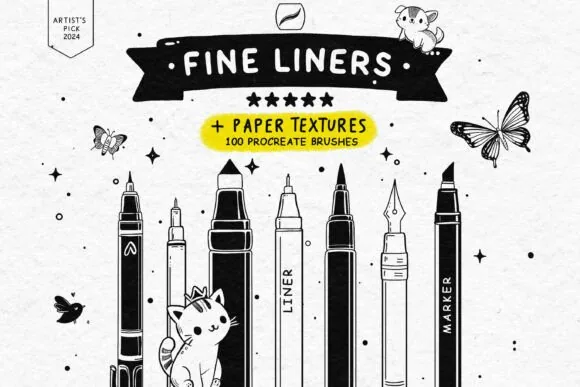
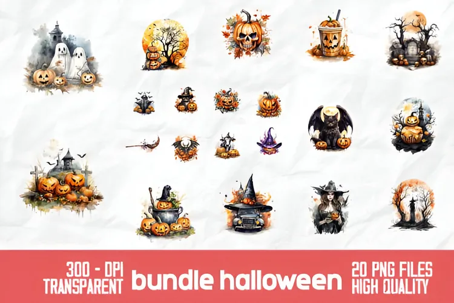
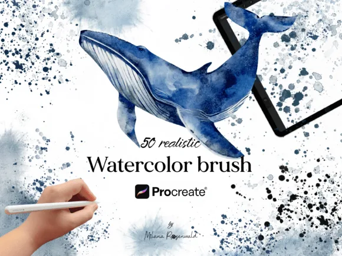
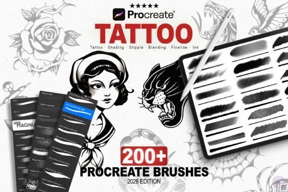

Learn the craft
Procreate Tutorials & Brush Guides
Original, technique-first articles for iPad artists, with transparent recommendations and practical workflows.

Best Procreate Brushes for Anime and Manga: Lines, Shading, and Texture
Learn which Procreate brushes suit anime and manga linework, cel shading and soft styles, with a free liner option and optional DigiKitPro packs.
Read article →
Best Procreate Brushes for Beginners: A Simple Starter Kit
Start drawing in Procreate with a few built-in brushes, try a simple exercise and explore optional free and paid sets for your workflow.
Read article →Best Procreate Brushes for Line Art: How to Choose a Liner
Compare Procreate line-art brushes by taper, pressure, texture and stabilisation. Try a simple liner test with free or specialist tools.
Read article →
Best Procreate Brushes for Portraits: A Workflow-Based Guide
Compare Procreate portrait brushes for sketching, skin, hair and detail. See when a free guide, focused skin set or broader kit may fit.
Read article →Christmas Procreate Tutorial: Design a Holiday Card with Brushes
Follow this Christmas Procreate tutorial to build a printable holiday card with stamps, washi tape, chalk lettering, paper, and controlled sparkle.
Read article →
Halloween Procreate Tutorial: Paint a Moonlit Pumpkin Scene
Follow this Halloween Procreate tutorial to build a moonlit pumpkin scene with a PNG asset, fog, warm glow, and restrained sparkle.
Read article →
How to Choose Procreate Brushes: A Practical Buying Guide
Choose Procreate brushes for sketching, portraits or line art. Compare free and paid sets by their marks, contents, compatibility and licence.
Read article →
How to Paint Realistic Skin in Procreate: A Layered Workflow
Paint skin in Procreate with eight steps for values, undertones, blending and texture. Built-in brushes work; specialist tools are optional.
Read article →
How to Create Realistic Skin Texture in Procreate
Learn how to add believable pores, freckles, blemishes, and wrinkles in Procreate without covering your portrait in repetitive digital noise.
Read article →
How to Create Realistic Watercolor in Procreate
Learn how to create realistic watercolor in Procreate by building washes, blooms, granulation, paper grain, and soft-edged layers.
Read article →How to Install Procreate Brushes on iPad: .brushset Step by Step
Learn how to install Procreate brushes and .brushset files on iPad from Files, including ZIP extraction, in-app import, drag-and-drop, and fixes.
Read article →
How to Make Digital Art Look Traditional: 7 Practical Techniques
Give Procreate art a traditional feel with paper texture, broken edges and layered marks. Compare dry-media and watercolor techniques.
Read article →
How to Paint Realistic Hair in Procreate Without Drawing Every Strand
Paint realistic hair in Procreate by building the silhouette, values, clumps and selected strands—without drawing every individual hair.
Read article →
Procreate Blending Brushes: How to Blend Without Plastic Skin
Compare Smudge, textured blenders and painting over transitions in Procreate. Practise soft edges without losing the texture of your art.
Read article →
Best Procreate Canvas Size and DPI for Digital Art
Choose a Procreate canvas size and DPI for screen art, portraits, line art, and print without sacrificing layer space or texture control.
Read article →
The Complete Procreate Portrait Workflow: Sketch to Final Polish
Follow a repeatable Procreate portrait workflow from reference and canvas setup through construction, values, skin, hair, edges, and final polish.
Read article →
Procreate Stamp Brushes vs Painting Brushes: When to Use Each
Understand the difference between Procreate stamp brushes and painting brushes, when each is useful, and how to paint over stamps so your work stays personal.
Read article →
How to Design a Tattoo in Procreate: From Sketch to Stencil
Learn a responsible Procreate workflow for tattoo concepts: plan the body placement, build clear linework, add value, and prepare a clean stencil reference.
Read article →